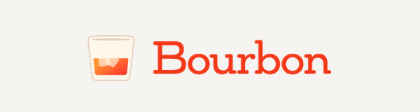

Getting Sassay
Everything you need to know about Sass, Compass, and a practical Local Workflow
Sass is a CSS preprocessor
written in Ruby
that compiles into CSS.
SCSS
$primary-color: red;
.article {
.title {
background: $primary-color;
}
}CSS
.article .title {
background: red;
}Why use sass?
Reduce repitition (no more copy-pasting!)
Create manageable, well organized code (one use, in one place)
Add simple logic to the declaritive language of CSS (if this then WHAAAT?)
Built in error checking no more hunting missing semicolons!)
Spend your time developing css systems,
Not doing busy work.
The Basics
Sass has two syntaxes:
Old .Sass
#main
color: blue
font-size: 0.3emNew .Scss
#main {
color: blue;
font-size: 0.3em;
}Write .SCSS
SCSS is a superset of CSS
Easy to start. Rename your .css files to .scss
Use the features you're comfortable with. You can still write normal CSS
Then, when you're ready,
Compile your SCSS to CSS
The Sass gem turns your .scss into plain .css
This is what you give the browser
Sass is a local tool
Let's get into the Language
The easy stuff
- Variables
- Nesting
Variables
$imagebox-blue: #337FCC;Simple replacement of a CSS value
Stop writing the same things over and over
Colors, font stacks, grid padding
Change all values in a stylesheet from one place
$imagebox-blue: #337FCC;
$font-primary: Baskerville, Times, serif;
$sprite-bg: $imagebox-blue url(../img/sprites.png);SCSS
$imagebox-blue: #337FCC;
.title {
margin: 1.6 0;
color: $imagebox-blue;
font-size: 2rem;
}
.action-link:hover {
border-bottom: solid 1px $imagebox-blue;
}compile it!
CSS
.title {
margin: 1.6 0;
color: #337FCC;
font-size: 2rem;
}
.action-link:hover {
border-bottom: solid 1px #337FCC;
}Nesting
article {
.title {
color: green;
}
}Stop writing the same things over and over
Smaller Sass stylesheets. See at a glance how selectors relate to each other
Quicker debugging. Move, don't type.
SCSS
.article {
margin-bottom: 2em;
.title {
font-size: 2em;
background: $primary-color;
}
.subtitle {
font-size: 1.5em;
}
}compile it!
CSS
.article { margin-bottom: 2em; }
.article .title { font-size: 2em; background: red; }
.article .subtitle { font-size: 1.5em; }The & selector
represents a nested selector's
parent
SCSS
a {
text-decoration: none;
&:hover {
text-decoration: underline;
}
}
.article {
margin-bottom: 2rem;
.home & {
margin-bottom: 1rem;
}
}
.logo {
.no-svg & {
background: url(../img/logo.png);
}
}
compile it!
CSS
a { text-decoration: none; }
a:hover { text-decoration: underline; }
.article { margin-bottom: 2rem; }
.home .article { margin-bottom: 1rem; }
.no-svg .header { background: url(../img/logo.png); }Careful!
Don't nest too greedily, or too deep
Too much nesting binds the css with html structure
Inception Rule: Three levels is pushing it — Four is too many
Level up
- Mixins, arguments
- Extend
- Functions
Mixins
.action-item {
@include sassy-button("shiny");
}Bundle and reuse a group of css rules
Stop writing the same things over and over
Create a library of styles to re-use,
both during and between projects
SCSS
First, you define the mixin
@mixin clearfix() {
&:before {
content: " ";
display: table;
}
&:after {
content: " ";
display: table;
clear: both;
}
}Then, you include the mixin
.container {
@include clearfix();
}compile it!
CSS
.container:before {
content: " ";
display: table;
}
.container:after {
content: " ";
display: table;
clear: both;
}Mixins can take arguments
.action-item {
@include border-radius(10px);
}Arguments pass information into the mixin
For example..
@mixin size-box($width, $height, $bg-color: white) {
width: $width;
height: $height;
background: $bg-color;
}.container {
@include size-box(50%, 450px);
}.container {
width: 50%;
height: 450px;
background: white;
}Placeholders and Extend
.subtitle {
@extend %secondary-title;
}Placeholders are like mixins, but without arguments
The rules they contain are only printed if they're extended
Instead of duplicating code every time it's called, extend creates a comma separated list of selectors and a single set of rules
Use these together for Sass awesomeness
SCSS
First, you define the placeholder
%secondary-title {
font-size: 1.3em;
text-transform: uppercase;
color: green;
}Then, you extend the placeholder
article .subtitle {
@extend %secondary-title;
}
... A bunch of other styles ...
.callout-title {
@extend %secondary-title;
}compile it!
CSS
article .subtitle, .callout-title {
font-size: 1.3em;
text-transform: uppercase;
color: green;
}Careful!
You can extend placeholders and normal selectors
Don't extend normal selectors
Watch out for placeholders inside of media queries
.this-style, .that-style, @media (min-width: 25em) { .other_style {} }, .last-style {
...
}Functions
.alert-message {
background: tint($primary-color, 20%);
}Functions are like mixins, but they return a single value
Like mixins, they can (and almost always do) take arguments
Often used to alter a value you're already reusing, or for calculation
SCSS
Define it
@function greenify($color) {
$color: mix($color, green, 30%);
@return $color;
}
Use it
$text-color: hsl(240, 28%, 57%);
.forrest-button {
color: greenify($text-color);
}
compiled!
CSS
.forrest-button {
color: hsl(132, 57%, 31%);
}Built in Sass Functions
Sass comes with a few useful functions built in.
A peek into Advanced Sass
- Math
- Control Directives (@if, @else)
- @debug
Math
$gutter: 1em;
.container {
padding: $gutter;
}
.column {
margin: 0 $gutter/2;
}Control Directives
Standard logic constructs: @if, @for, @each, @while
@mixin clearfix($legacy:false) {
@if $legacy == true {
zoom:1;
}
&:before {
content: " ";
display: table;
}
&:after {
content: " ";
display: table;
clear: both;
}
}@debug
Agghhhhhh why didn't that work?
Scss
@debug $variable;
In your terminal window
scss/style.scss:70 DEBUG: false

Enter Compass

>
Why is it the winner?
Much larger library
Many more extensions
Broad base of support
Control through config.rb
Comes bundled with a ton of other tools (sprite generation, image compression, url helpers...)
it's the defacto standard
Mixins
CSS3 Mixins
.wo-c {
background-color: #444444;
background-image: -webkit-gradient(linear, left top, left bottom, from(#444444), to(#999999));
background-image: -webkit-linear-gradient(top, #444444, #999999);
background-image: -moz-linear-gradient(top, #444444, #999999);
background-image: -o-linear-gradient(top, #444444, #999999);
background-image: linear-gradient(to bottom, #444444, #999999);
}
.w-c {
@include background(linear-gradient(#444444, #999999));
}
.w-c,
.wo-c {
width: 100px;
height: 100px;
margin-right: 1em;
float: left;
}Check out this Pen!Mixins for Common Patterns
CSS
a:link { color: #B2FF99; }
a:hover { color: #FF704D; }
a:active { color: #FF704D; }
a:visited { color: #FFFF85; }
a:focus { color: #FF704D; }
SCSS
a {
&:link { color: #B2FF99 }
&:hover { color: #FF704D; }
&:active { color: #FF704D; }
&:visited { color: #FFFF85; }
&:focus { color: #FF704D; }
}
SCSS w/ Compass
a {
@include link-colors( #B2FF99, #FF704D, #FF704D, #FFFF85, #FF704D );
}
Wait, there's more!
config.rb
Massively Extensible
- Modular Scale for typography
- Susy for layout
- Breakpoint for media queries
Compass Extenstions: All Together Now
$med: 500px;
$lrg: 800px;
$grids: 2, 6 $med, 12 $lrg;
.main {
@include grid-span(2, 1);
@include breakpoint($med) {
@include grid-span(4, 1);
}
@include breakpoint($lrg) {
@include grid-span(6, 1);
}
}
This example uses Singularity and Breakpoint gems.
Use Wisely!
The clearfix Compass includes is outdated
div {
@include clearfix;
}
Output:
div {
overflow: hidden;
*zoom: 1;
}
You'd be better off with:
@mixin cf{
&:before,
&:after {
content: " ";
display: table;
}
&:after {
clear: both;
}
}
%cf {
@include cf;
}
LET'S TAKE A FUCKING BREAK!
unless you don't want toBest Practices
Two Layer Abstraction
$red: hsl(360, 100%, 50%);
$blue: hsl(240, 100%, 50%);
$yellow: hsl(60, 100%, 50%);
$green: hsl(120, 100%, 50%);
$primary-color: $red;
$secondary-color: $blue;
$tertiary-color: $yellow;
$quadrary-color: $green;
/*
$yellow-magnolia: #DEB159;
$dark-brown: #2C1209;
$marroon: #6D2013;
$deep-red: #910F15;
$primary-color: $yellow-magnolia;
$secondary-color: $dark-brown;
$tertiary-color: $marroon;
$quadrary-color: $deep-red;
*/
.one {
background: $primary-color;
@extend %form;
}
.two {
background: $secondary-color;
@extend %form;
}
.three {
background: $tertiary-color;
@extend %form;
}
.four {
background: $quadrary-color;
@extend %form;
}
%form {
width: 100px;
height: 100px;
display: inline-block;
margin: 5px;
}Check out this Pen!Partials
File Structure
/ scss
- style.scss
- _base.scss
- _layout.scss
- _module.scss
- _state.scss
- _theme.scss
@import "base";
@import "layout";
@import "module";
@import "state";
@import "theme";
Nested @imports
File Structure
/ scss
/pages
- _archive.scss
- _single-post.scss
- _custom-template.scss
.container-main {
max-width: 1200px;
margin: 0 auto;
}
@import "archive";
@import "single-post";
@import "custom-template";
A few more...
Don't edit the CSS
Don't worry about how the compiled CSS looks
Work Locally
Practical Local Workflow
Why?
Save yourself a lot of time
Avoid downtime
Seriously, you'll save a lot of time
Components
MAMP, local server
Run a full version of Wordpress locally
Compiling Sass
Command line
Sass, Compass, Guard
GUI
Compass.app, Scout, Codekit
Style Injection
The ability to see style changes without a browser refresh
Keep a browser window open
There are both CLI and GUI options
LiveReload
Inspection
At the least compile with line numbers
Inspecting Sass in the Browser (Chrome Dev Tools, Firesass)
Save edits from the browser (Chrome Only)
Version Control
Theme folder
Database